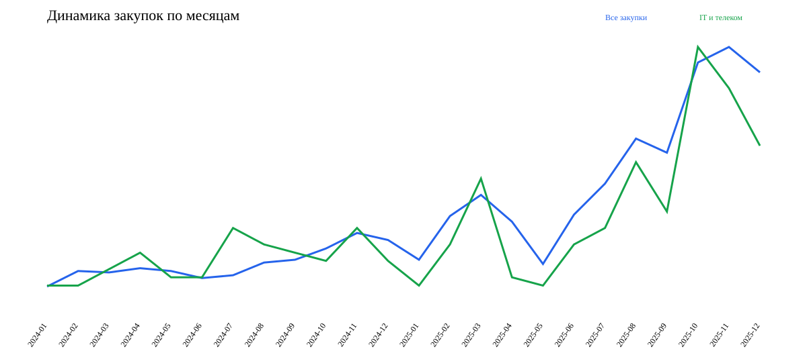
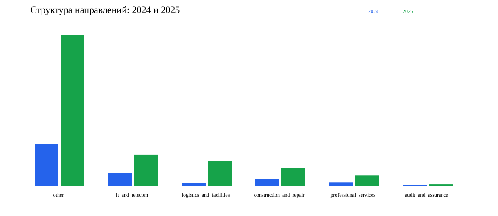
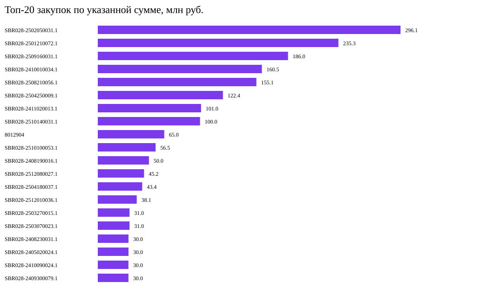
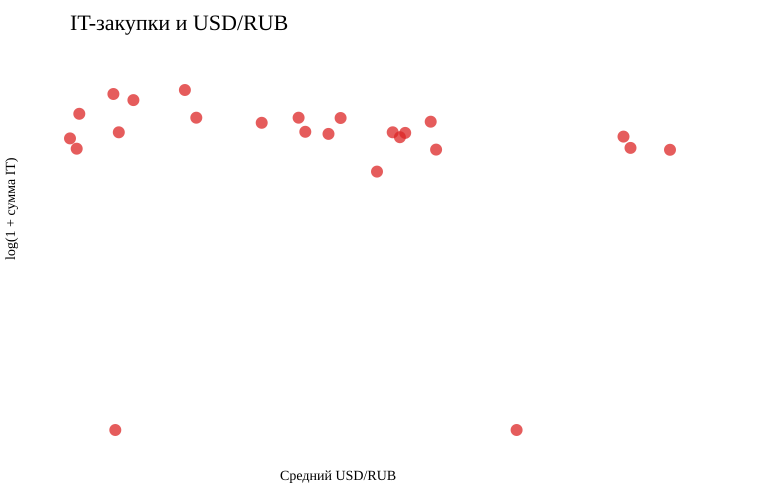

IT и телеком: 210 закупок, 906,824,739.40 руб., 14.4% подтверждённой выборки по количеству.
Наблюдение: направление крупное и включает программное обеспечение, лицензии, аппаратные и телеком-решения.
Интерпретация: часть стоимости может зависеть от импортных компонентов и валютного курса.
Значимость: направление достаточно представительно для динамического и корреляционного анализа.
Ограничение: классификация основана на ключевых словах и требует проверки документов для неоднозначных предметов.
2024: 325 закупок на 1,363,918,337.45 руб.
2025: 1133 закупок на 2,912,638,386.02 руб.
Наблюдение: количество подтверждённых закупок в 2025 году выше, чем в 2024 году.
Интерпретация: рост отражает одновременно закупочную активность и улучшившееся покрытие источника; его нельзя целиком считать бизнес-ростом.
Значимость: сравнение показывает изменение структуры и нагрузки по годам.
Ограничение: данные не содержат полной суммы заключённых контрактов, а часть НМЦ отсутствует или указана как тариф/единичная цена.
[
{
"hypothesis": "IT procurement amount vs USD/RUB",
"metric": "it_amount_rub",
"factor": "usd_rub_avg",
"observations": 24,
"transformation": "log1p",
"pearson_r": -0.1039,
"p_value": 0.6501,
"decision": "not_statistically_significant",
"limitation": "Monthly observational association does not establish causality; category classification is keyword-based."
},
{
"hypothesis": "IT procurement count vs USD/RUB",
"metric": "it_count",
"factor": "usd_rub_avg",
"observations": 24,
"transformation": "none",
"pearson_r": -0.4957,
"p_value": 0.0135,
"decision": "statistically_significant_association",
"limitation": "Monthly observational association does not establish causality; category classification is keyword-based."
},
{
"hypothesis": "Construction procurement amount vs key rate",
"metric": "construction_amount_rub",
"factor": "key_rate_avg",
"observations": 24,
"transformation": "log1p",
"pearson_r": 0.0134,
"p_value": 0.951,
"decision": "not_statistically_significant",
"limitation": "Monthly observational association does not establish causality; category classification is keyword-based."
},
{
"hypothesis": "Construction procurement count vs key rate",
"metric": "construction_count",
"factor": "key_rate_avg",
"observations": 24,
"transformation": "none",
"pearson_r": 0.0239,
"p_value": 0.9116,
"decision": "not_statistically_significant",
"limitation": "Monthly observational association does not establish causality; category classification is keyword-based."
}
]
Наблюдение: коэффициенты рассчитаны по 24 месячным наблюдениям с p-value.
Интерпретация: статистическая связь принимается только при p < 0,05.
Значимость: проверка отделяет визуальное совпадение динамики от статистически подтверждаемой ассоциации.
Ограничение: корреляция не доказывает причинность; возможны сезонность, лаг закупочного цикла и влияние нескольких факторов.
{
"extreme_amount": 12,
"cancelled_procedure": 199,
"same_subject_price_jump": 26,
"cancelled_then_republished": 15
}
Наблюдение: сформированы списки экстремальных сумм, отмен, повторных публикаций и скачков цены похожего предмета.
Интерпретация: сигнал является поводом открыть карточку и документы, а не доказательством нарушения.
Значимость: список задаёт приоритет ручной проверки.
Ограничение: единственного участника и долю побед поставщиков пока нельзя проверить без протоколов участников и победителей.
LLM-задачи подготовлены для IT-закупок и аномальных карточек. Модель должна проверять категорию, извлекать признаки единственного поставщика, объяснять риск и формировать вывод в формате наблюдение, интерпретация, значимость, ограничение. Отсутствующие факты запрещено додумывать.



